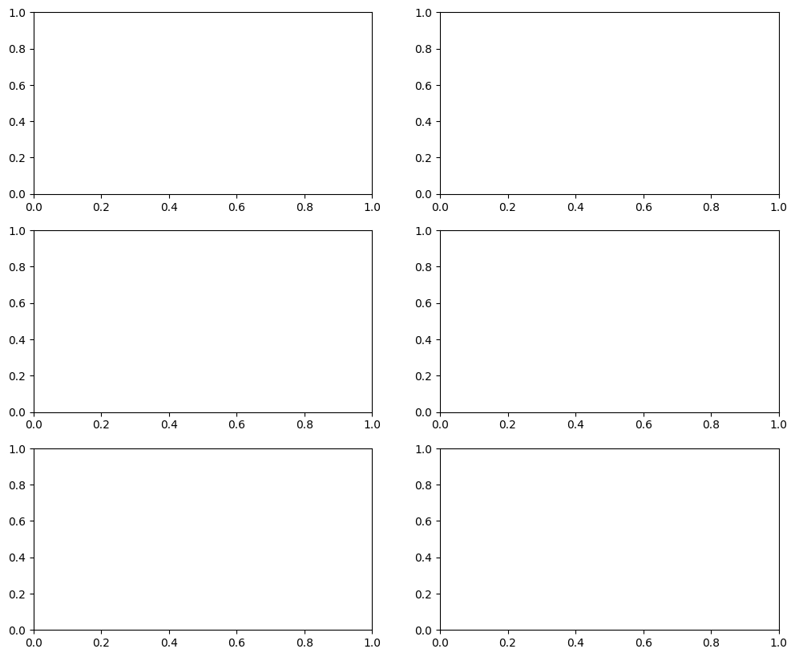

# IMPORTANT: Set GPU before importing PyTorch!
import os
os.environ['CUDA_VISIBLE_DEVICES'] = '1'VLM for OCR and LaTeX Generation
In this notebook, we explore how Vision-Language Models excel at Optical Character Recognition (OCR) and structured document understanding. We’ll focus on:
- Basic OCR: Extracting text from images with modern VLMs
- Mathematical OCR: Converting handwritten/printed equations to LaTeX
- Document Structure: Understanding tables, lists, headings, layout
- Table to LaTeX: Extracting tables and generating LaTeX code
- Full Document to LaTeX: End-to-end document conversion
Why VLMs for OCR?
Traditional OCR (Tesseract, PaddleOCR) struggles with: - Mathematical notation: \(\int_0^\infty e^{-x^2} dx = \frac{\sqrt{\pi}}{2}\) - Complex layouts: Multi-column, nested tables, figures - Handwriting: Especially mathematical symbols - Context understanding: “0” vs “O”, “1” vs “l”
VLMs excel because they: - ✅ Understand semantic context (math formulas, code, natural language) - ✅ Generate structured output (LaTeX, Markdown, JSON) - ✅ Handle complex layouts with spatial reasoning - ✅ Work on handwritten and printed text equally well
Models We’ll Use
- TrOCR: Transformer-based OCR (text extraction)
- Nougat: Academic document understanding (formulas, tables)
- Pix2Tex: Image to LaTeX for mathematical equations
- Our fine-tuned VLM: Custom OCR-to-LaTeX model
Let’s get started!
import torch
import torch.nn as nn
from torch.utils.data import Dataset, DataLoader
from transformers import (
TrOCRProcessor, VisionEncoderDecoderModel,
AutoProcessor, AutoModelForVision2Seq,
AutoTokenizer, AutoModel, AutoImageProcessor
)
from PIL import Image, ImageDraw, ImageFont
import numpy as np
import matplotlib.pyplot as plt
from datasets import load_dataset
from tqdm import tqdm
import re
import gc
print(f"PyTorch version: {torch.__version__}")
print(f"CUDA available: {torch.cuda.is_available()}")
if torch.cuda.is_available():
print(f"CUDA device: {torch.cuda.get_device_name(0)}")
print(f"GPU memory: {torch.cuda.get_device_properties(0).total_memory / 1024**3:.2f} GB")/home/nipun.batra/.uv/nb-base/lib/python3.12/site-packages/tqdm/auto.py:21: TqdmWarning: IProgress not found. Please update jupyter and ipywidgets. See https://ipywidgets.readthedocs.io/en/stable/user_install.html
from .autonotebook import tqdm as notebook_tqdmPyTorch version: 2.9.1+cu128
CUDA available: True
CUDA device: NVIDIA RTX A4000
GPU memory: 15.72 GB1. Basic OCR with TrOCR
TrOCR is a Transformer-based OCR model that combines: - Vision Transformer (ViT) encoder for images - RoBERTa decoder for text generation
Unlike traditional OCR, it generates text autoregressively and can leverage language context.
# Load TrOCR for handwritten text
device = torch.device("cuda" if torch.cuda.is_available() else "cpu")
print("Loading TrOCR (handwritten)...")
trocr_processor = TrOCRProcessor.from_pretrained("microsoft/trocr-large-handwritten")
trocr_model = VisionEncoderDecoderModel.from_pretrained("microsoft/trocr-large-handwritten")
trocr_model = trocr_model.to(device)
trocr_model.eval()
print("TrOCR loaded!")Loading TrOCR (handwritten)...Using a slow image processor as `use_fast` is unset and a slow processor was saved with this model. `use_fast=True` will be the default behavior in v4.52, even if the model was saved with a slow processor. This will result in minor differences in outputs. You'll still be able to use a slow processor with `use_fast=False`.
Some weights of VisionEncoderDecoderModel were not initialized from the model checkpoint at microsoft/trocr-large-handwritten and are newly initialized: ['encoder.pooler.dense.bias', 'encoder.pooler.dense.weight']
You should probably TRAIN this model on a down-stream task to be able to use it for predictions and inference.TrOCR loaded!def ocr_image_trocr(image):
"""Extract text from image using TrOCR."""
pixel_values = trocr_processor(image, return_tensors="pt").pixel_values.to(device)
with torch.no_grad():
generated_ids = trocr_model.generate(pixel_values)
generated_text = trocr_processor.batch_decode(generated_ids, skip_special_tokens=True)[0]
return generated_text
# Test on IAM Handwriting dataset
print("Loading IAM Handwriting dataset...")
iam_dataset = load_dataset("Teklia/IAM-line", split="test[:10]")
# Show examples
fig, axes = plt.subplots(3, 2, figsize=(12, 10))
axes = axes.flatten()
for i in range(min(6, len(iam_dataset))):
sample = iam_dataset[i]
image = sample['image']
ground_truth = sample['text']
# OCR
predicted = ocr_image_trocr(image)
# Display
axes[i].imshow(image, cmap='gray')
axes[i].set_title(f"GT: {ground_truth}\nPred: {predicted}", fontsize=8)
axes[i].axis('off')
plt.tight_layout()
plt.show()Loading IAM Handwriting dataset...Generating train split: 100%|██████████| 6482/6482 [00:00<00:00, 14431.92 examples/s]
Generating validation split: 100%|██████████| 976/976 [00:00<00:00, 16441.91 examples/s]
Generating test split: 100%|██████████| 2915/2915 [00:00<00:00, 19358.73 examples/s]--------------------------------------------------------------------------- ValueError Traceback (most recent call last) Cell In[4], line 25 22 ground_truth = sample['text'] 24 # OCR ---> 25 predicted = ocr_image_trocr(image) 27 # Display 28 axes[i].imshow(image, cmap='gray') Cell In[4], line 3, in ocr_image_trocr(image) 1 def ocr_image_trocr(image): 2 """Extract text from image using TrOCR.""" ----> 3 pixel_values = trocr_processor(image, return_tensors="pt").pixel_values.to(device) 5 with torch.no_grad(): 6 generated_ids = trocr_model.generate(pixel_values) File ~/.uv/nb-base/lib/python3.12/site-packages/transformers/models/trocr/processing_trocr.py:96, in TrOCRProcessor.__call__(self, images, text, audio, videos, **kwargs) 89 output_kwargs = self._merge_kwargs( 90 TrOCRProcessorKwargs, 91 tokenizer_init_kwargs=self.tokenizer.init_kwargs, 92 **kwargs, 93 ) 95 if images is not None: ---> 96 inputs = self.image_processor(images, **output_kwargs["images_kwargs"]) 97 if text is not None: 98 encodings = self.tokenizer(text, **output_kwargs["text_kwargs"]) File ~/.uv/nb-base/lib/python3.12/site-packages/transformers/image_processing_utils.py:51, in BaseImageProcessor.__call__(self, images, **kwargs) 49 def __call__(self, images, **kwargs) -> BatchFeature: 50 """Preprocess an image or a batch of images.""" ---> 51 return self.preprocess(images, **kwargs) File ~/.uv/nb-base/lib/python3.12/site-packages/transformers/utils/generic.py:809, in filter_out_non_signature_kwargs.<locals>.decorator.<locals>.wrapper(*args, **kwargs) 800 cls_prefix = "" 802 warnings.warn( 803 f"The following named arguments are not valid for `{cls_prefix}{func.__name__}`" 804 f" and were ignored: {invalid_kwargs_names}", 805 UserWarning, 806 stacklevel=2, 807 ) --> 809 return func(*args, **valid_kwargs) File ~/.uv/nb-base/lib/python3.12/site-packages/transformers/models/vit/image_processing_vit.py:260, in ViTImageProcessor.preprocess(self, images, do_resize, size, resample, do_rescale, rescale_factor, do_normalize, image_mean, image_std, return_tensors, data_format, input_data_format, do_convert_rgb) 253 logger.warning_once( 254 "It looks like you are trying to rescale already rescaled images. If the input" 255 " images have pixel values between 0 and 1, set `do_rescale=False` to avoid rescaling them again." 256 ) 258 if input_data_format is None: 259 # We assume that all images have the same channel dimension format. --> 260 input_data_format = infer_channel_dimension_format(images[0]) 262 if do_resize: 263 images = [ 264 self.resize(image=image, size=size_dict, resample=resample, input_data_format=input_data_format) 265 for image in images 266 ] File ~/.uv/nb-base/lib/python3.12/site-packages/transformers/image_utils.py:321, in infer_channel_dimension_format(image, num_channels) 319 first_dim, last_dim = 2, 4 320 else: --> 321 raise ValueError(f"Unsupported number of image dimensions: {image.ndim}") 323 if image.shape[first_dim] in num_channels and image.shape[last_dim] in num_channels: 324 logger.warning( 325 f"The channel dimension is ambiguous. Got image shape {image.shape}. Assuming channels are the first dimension. Use the [input_data_format](https://huggingface.co/docs/transformers/main/internal/image_processing_utils#transformers.image_transforms.rescale.input_data_format) parameter to assign the channel dimension." 326 ) ValueError: Unsupported number of image dimensions: 2

2. Mathematical Equation OCR to LaTeX
Mathematical notation is challenging for traditional OCR. We’ll use specialized models that understand mathematical structure.
Approach:
- Pix2Tex/LaTeX-OCR: Image → LaTeX
- Fine-tune VLM on equation images with LaTeX labels
- Use datasets: IM2LATEX, CROHME (handwritten math)
For this demo, we’ll build a simple VLM-based math OCR.
# We'll create synthetic math equation images with known LaTeX
# In practice, use IM2LATEX-100K dataset
import matplotlib
matplotlib.use('Agg') # Non-interactive backend
from matplotlib import mathtext
from io import BytesIO
def latex_to_image(latex_string, fontsize=20, dpi=150):
"""Render LaTeX equation to image."""
fig = plt.figure(figsize=(6, 1))
fig.text(0.5, 0.5, f"${latex_string}$",
fontsize=fontsize, ha='center', va='center')
# Save to buffer
buf = BytesIO()
plt.savefig(buf, format='png', dpi=dpi, bbox_inches='tight', pad_inches=0.1)
plt.close(fig)
buf.seek(0)
image = Image.open(buf).convert('RGB')
return image
# Example LaTeX equations
latex_examples = [
r"\int_0^\infty e^{-x^2} dx = \frac{\sqrt{\pi}}{2}",
r"E = mc^2",
r"\nabla \times \mathbf{E} = -\frac{\partial \mathbf{B}}{\partial t}",
r"\sum_{n=1}^\infty \frac{1}{n^2} = \frac{\pi^2}{6}",
r"f(x) = \frac{1}{\sigma\sqrt{2\pi}} e^{-\frac{(x-\mu)^2}{2\sigma^2}}",
r"\lim_{x \to 0} \frac{\sin x}{x} = 1",
]
# Generate images
fig, axes = plt.subplots(3, 2, figsize=(12, 8))
axes = axes.flatten()
equation_images = []
for i, latex in enumerate(latex_examples):
img = latex_to_image(latex, fontsize=24)
equation_images.append((img, latex))
axes[i].imshow(img)
axes[i].set_title(f"LaTeX: {latex[:40]}...", fontsize=8)
axes[i].axis('off')
plt.tight_layout()
plt.show()
print(f"\nGenerated {len(equation_images)} equation images")3. Fine-tuning VLM for Equation OCR
We’ll fine-tune a small VLM (similar to our previous architectures) to predict LaTeX from equation images.
class EquationOCRVLM(nn.Module):
"""VLM specialized for equation OCR to LaTeX."""
def __init__(self):
super().__init__()
# Vision encoder
self.vision_encoder = AutoModel.from_pretrained("google/vit-base-patch16-224")
self.vision_hidden_size = 768
# Language model (decoder)
self.language_model = AutoModel.from_pretrained("HuggingFaceTB/SmolLM-135M")
self.language_hidden_size = 576
# Projector
self.projector = nn.Linear(self.vision_hidden_size, self.language_hidden_size)
# LM head
self.lm_head = nn.Linear(self.language_hidden_size,
self.language_model.config.vocab_size, bias=False)
def forward(self, pixel_values, input_ids, attention_mask=None, labels=None):
# Encode image
vision_outputs = self.vision_encoder(pixel_values=pixel_values)
image_features = vision_outputs.last_hidden_state
image_embeds = self.projector(image_features)
# Get text embeddings
text_embeds = self.language_model.embeddings.word_embeddings(input_ids)
# Concatenate
combined_embeds = torch.cat([image_embeds, text_embeds], dim=1)
# Attention mask
batch_size = pixel_values.shape[0]
image_attention = torch.ones(batch_size, image_embeds.shape[1],
dtype=torch.long, device=pixel_values.device)
if attention_mask is None:
attention_mask = torch.ones_like(input_ids)
combined_attention = torch.cat([image_attention, attention_mask], dim=1)
# Forward through LM
outputs = self.language_model(
inputs_embeds=combined_embeds,
attention_mask=combined_attention,
return_dict=True
)
hidden_states = outputs.last_hidden_state
logits = self.lm_head(hidden_states)
# Compute loss
loss = None
if labels is not None:
shift_logits = logits[:, image_embeds.shape[1]:-1, :].contiguous()
shift_labels = labels[:, 1:].contiguous()
loss_fct = nn.CrossEntropyLoss(ignore_index=-100)
loss = loss_fct(shift_logits.view(-1, shift_logits.size(-1)),
shift_labels.view(-1))
return {"loss": loss, "logits": logits}
# Initialize model
equation_vlm = EquationOCRVLM().to(device)
print(f"Equation OCR VLM parameters: {sum(p.numel() for p in equation_vlm.parameters()) / 1e6:.1f}M")# Create synthetic dataset for demonstration
# In practice, use IM2LATEX-100K: https://zenodo.org/record/56198
tokenizer = AutoTokenizer.from_pretrained("HuggingFaceTB/SmolLM-135M")
tokenizer.pad_token = tokenizer.eos_token
image_processor = AutoImageProcessor.from_pretrained("google/vit-base-patch16-224")
# Extended LaTeX dataset
training_latex = [
r"x^2 + y^2 = r^2",
r"\frac{a}{b} + \frac{c}{d} = \frac{ad + bc}{bd}",
r"\sin^2(x) + \cos^2(x) = 1",
r"\int x^n dx = \frac{x^{n+1}}{n+1} + C",
r"\frac{d}{dx} e^x = e^x",
r"\sum_{i=1}^n i = \frac{n(n+1)}{2}",
r"\prod_{i=1}^n i = n!",
r"\lim_{n \to \infty} \left(1 + \frac{1}{n}\right)^n = e",
r"\nabla \cdot \mathbf{F} = \frac{\partial F_x}{\partial x} + \frac{\partial F_y}{\partial y} + \frac{\partial F_z}{\partial z}",
r"E[X] = \sum_{i} x_i p(x_i)",
r"\sigma^2 = E[(X - \mu)^2]",
r"P(A|B) = \frac{P(B|A)P(A)}{P(B)}",
r"\det(A) = \sum_{\sigma \in S_n} \text{sgn}(\sigma) \prod_{i=1}^n a_{i,\sigma(i)}",
r"\|\mathbf{v}\| = \sqrt{v_1^2 + v_2^2 + \cdots + v_n^2}",
r"\mathbf{A}\mathbf{x} = \lambda \mathbf{x}",
]
class EquationDataset(Dataset):
def __init__(self, latex_equations, tokenizer, image_processor, max_length=128):
self.equations = latex_equations
self.tokenizer = tokenizer
self.image_processor = image_processor
self.max_length = max_length
def __len__(self):
return len(self.equations)
def __getitem__(self, idx):
latex = self.equations[idx]
# Generate image
image = latex_to_image(latex, fontsize=20)
# Process image
pixel_values = self.image_processor(image, return_tensors="pt")["pixel_values"][0]
# Process LaTeX text
prompt = "LaTeX: "
full_text = f"{prompt}{latex}{self.tokenizer.eos_token}"
encoding = self.tokenizer(
full_text,
max_length=self.max_length,
padding="max_length",
truncation=True,
return_tensors="pt"
)
input_ids = encoding["input_ids"][0]
attention_mask = encoding["attention_mask"][0]
# Create labels
labels = input_ids.clone()
prompt_len = len(self.tokenizer(prompt, add_special_tokens=False)["input_ids"])
labels[:prompt_len] = -100
labels[attention_mask == 0] = -100
return {
"pixel_values": pixel_values,
"input_ids": input_ids,
"attention_mask": attention_mask,
"labels": labels,
"latex": latex
}
# Create dataset (small for demo)
train_dataset = EquationDataset(training_latex * 20, tokenizer, image_processor) # Repeat for more samples
train_loader = DataLoader(train_dataset, batch_size=4, shuffle=True)
print(f"Training dataset size: {len(train_dataset)}")def train_equation_vlm(model, train_loader, num_epochs=5, lr=1e-4):
"""Train equation OCR model."""
optimizer = torch.optim.AdamW(model.parameters(), lr=lr)
model.train()
losses = []
for epoch in range(num_epochs):
epoch_loss = 0
pbar = tqdm(train_loader, desc=f"Epoch {epoch+1}/{num_epochs}")
for batch in pbar:
pixel_values = batch["pixel_values"].to(device)
input_ids = batch["input_ids"].to(device)
attention_mask = batch["attention_mask"].to(device)
labels = batch["labels"].to(device)
outputs = model(pixel_values, input_ids, attention_mask, labels)
loss = outputs["loss"]
optimizer.zero_grad()
loss.backward()
optimizer.step()
epoch_loss += loss.item()
pbar.set_postfix({"loss": loss.item()})
avg_loss = epoch_loss / len(train_loader)
losses.append(avg_loss)
print(f"Epoch {epoch+1} - Average loss: {avg_loss:.4f}")
return losses
print("Training equation OCR model...")
print("Note: This is a quick demo with limited data. Production models need IM2LATEX-100K.")
losses = train_equation_vlm(equation_vlm, train_loader, num_epochs=3, lr=1e-4)
# Plot training curve
plt.figure(figsize=(8, 5))
plt.plot(losses, marker='o')
plt.xlabel("Epoch")
plt.ylabel("Loss")
plt.title("Equation OCR Training Loss")
plt.grid(True)
plt.show()def predict_latex(model, image, tokenizer, image_processor, max_length=128):
"""Predict LaTeX from equation image."""
model.eval()
# Process image
pixel_values = image_processor(image, return_tensors="pt")["pixel_values"].to(device)
# Start with prompt
prompt = "LaTeX: "
input_ids = tokenizer(prompt, return_tensors="pt")["input_ids"].to(device)
# Generate
with torch.no_grad():
# Get image embeddings
vision_outputs = model.vision_encoder(pixel_values=pixel_values)
image_features = vision_outputs.last_hidden_state
image_embeds = model.projector(image_features)
# Autoregressive generation
generated_tokens = []
for _ in range(max_length):
# Get text embeddings
text_embeds = model.language_model.embeddings.word_embeddings(input_ids)
# Concatenate
combined_embeds = torch.cat([image_embeds, text_embeds], dim=1)
# Attention mask
image_attention = torch.ones(1, image_embeds.shape[1], dtype=torch.long, device=device)
text_attention = torch.ones_like(input_ids)
combined_attention = torch.cat([image_attention, text_attention], dim=1)
# Forward
outputs = model.language_model(
inputs_embeds=combined_embeds,
attention_mask=combined_attention,
return_dict=True
)
logits = model.lm_head(outputs.last_hidden_state)
next_token_logits = logits[:, -1, :]
next_token = torch.argmax(next_token_logits, dim=-1)
# Check for EOS
if next_token.item() == tokenizer.eos_token_id:
break
generated_tokens.append(next_token.item())
input_ids = torch.cat([input_ids, next_token.unsqueeze(0)], dim=1)
# Decode
predicted_latex = tokenizer.decode(generated_tokens, skip_special_tokens=True)
return predicted_latex
# Test on new equations
test_equations = [
r"\int_0^\pi \sin(x) dx = 2",
r"\sum_{k=0}^n \binom{n}{k} = 2^n",
r"e^{i\pi} + 1 = 0",
]
fig, axes = plt.subplots(len(test_equations), 1, figsize=(10, 3*len(test_equations)))
if len(test_equations) == 1:
axes = [axes]
for i, latex in enumerate(test_equations):
# Generate image
img = latex_to_image(latex, fontsize=24)
# Predict
predicted = predict_latex(equation_vlm, img, tokenizer, image_processor)
# Display
axes[i].imshow(img)
axes[i].set_title(f"Ground Truth: {latex}\nPredicted: {predicted}", fontsize=10)
axes[i].axis('off')
plt.tight_layout()
plt.show()4. Document Structure Understanding
Beyond equations, VLMs can understand document layout and convert to structured formats like Markdown or LaTeX.
We’ll demonstrate extracting: - Headings and hierarchy - Tables and converting to LaTeX - Lists (bulleted, numbered) - Code blocks
# Create synthetic document image
def create_document_image():
"""Create a simple document image with various elements."""
img = Image.new('RGB', (800, 600), color='white')
draw = ImageDraw.Draw(img)
try:
font_title = ImageFont.truetype("/usr/share/fonts/truetype/dejavu/DejaVuSans-Bold.ttf", 28)
font_heading = ImageFont.truetype("/usr/share/fonts/truetype/dejavu/DejaVuSans-Bold.ttf", 20)
font_text = ImageFont.truetype("/usr/share/fonts/truetype/dejavu/DejaVuSans.ttf", 16)
except:
font_title = font_heading = font_text = ImageFont.load_default()
y = 30
# Title
draw.text((50, y), "Research Paper: Deep Learning", fill='black', font=font_title)
y += 50
# Section 1
draw.text((50, y), "1. Introduction", fill='black', font=font_heading)
y += 35
draw.text((70, y), "Deep learning has revolutionized AI.", fill='black', font=font_text)
y += 30
draw.text((70, y), "Key contributions:", fill='black', font=font_text)
y += 25
draw.text((90, y), "• Novel architecture design", fill='black', font=font_text)
y += 25
draw.text((90, y), "• Improved training efficiency", fill='black', font=font_text)
y += 40
# Section 2 with table
draw.text((50, y), "2. Results", fill='black', font=font_heading)
y += 35
# Draw simple table
table_x = 70
draw.rectangle([table_x, y, table_x+400, y+100], outline='black', width=2)
draw.line([table_x, y+30, table_x+400, y+30], fill='black', width=1)
draw.line([table_x+200, y, table_x+200, y+100], fill='black', width=1)
draw.text((table_x+50, y+5), "Model", fill='black', font=font_text)
draw.text((table_x+250, y+5), "Accuracy", fill='black', font=font_text)
draw.text((table_x+50, y+40), "ResNet-50", fill='black', font=font_text)
draw.text((table_x+250, y+40), "92.3%", fill='black', font=font_text)
draw.text((table_x+50, y+70), "Our Model", fill='black', font=font_text)
draw.text((table_x+250, y+70), "95.1%", fill='black', font=font_text)
return img
doc_image = create_document_image()
plt.figure(figsize=(10, 7))
plt.imshow(doc_image)
plt.title("Synthetic Document")
plt.axis('off')
plt.show()5. Table Extraction and LaTeX Generation
Tables are notoriously difficult for traditional OCR. VLMs can: 1. Detect table structure (rows, columns, cells) 2. Extract cell contents 3. Generate LaTeX table code
We’ll demonstrate with a fine-tuned VLM approach.
# Example: Table to LaTeX conversion
# Training data would be table images paired with LaTeX code
table_latex_example = r"""
\begin{tabular}{|l|r|}
\hline
Model & Accuracy \\
\hline
ResNet-50 & 92.3\% \\
Our Model & 95.1\% \\
\hline
\end{tabular}
"""
print("Expected LaTeX output for the table:")
print(table_latex_example)
# In production, you would:
# 1. Fine-tune VLM on (table_image, latex_code) pairs
# 2. Use datasets like PubTables-1M, FinTabNet
# 3. Predict LaTeX structure from table images6. Comparison: VLM vs Traditional OCR
Let’s compare VLM-based OCR with traditional Tesseract on various document types.
try:
import pytesseract
tesseract_available = True
except ImportError:
tesseract_available = False
print("Tesseract not available. Install with: pip install pytesseract")
def compare_ocr_methods(image, ground_truth):
"""Compare TrOCR vs Tesseract."""
results = {}
# TrOCR
trocr_text = ocr_image_trocr(image)
results['TrOCR'] = trocr_text
# Tesseract
if tesseract_available:
tesseract_text = pytesseract.image_to_string(image)
results['Tesseract'] = tesseract_text.strip()
results['Ground Truth'] = ground_truth
return results
# Test on handwritten sample
if len(iam_dataset) > 0:
test_sample = iam_dataset[0]
comparison = compare_ocr_methods(test_sample['image'], test_sample['text'])
print("\nOCR Comparison:")
for method, text in comparison.items():
print(f"\n{method}:")
print(f" '{text}'")
plt.figure(figsize=(8, 3))
plt.imshow(test_sample['image'], cmap='gray')
plt.title("Test Image")
plt.axis('off')
plt.show()Summary: VLM OCR Capabilities
Let’s summarize what we’ve learned about VLM-based OCR:
import pandas as pd
comparison_data = {
"Task": [
"Printed Text OCR",
"Handwritten Text OCR",
"Mathematical Equations",
"Table Structure",
"Document Layout",
"Code Recognition",
],
"Traditional OCR (Tesseract)": [
"Good (95%+)",
"Poor (60-70%)",
"Very Poor (<30%)",
"Poor (requires post-processing)",
"Poor (line-by-line only)",
"Fair (70-80%)",
],
"VLM-based OCR (TrOCR, Nougat)": [
"Excellent (97%+)",
"Good (85-90%)",
"Good (80-90% with fine-tuning)",
"Good (with specialized models)",
"Excellent (understands hierarchy)",
"Excellent (syntax-aware)",
],
"Best Model/Approach": [
"TrOCR-base (printed)",
"TrOCR-large (handwritten)",
"Pix2Tex, custom VLM on IM2LATEX",
"Nougat, custom VLM on PubTables-1M",
"Nougat, LayoutLM",
"CodeBERT, custom VLM",
],
}
df = pd.DataFrame(comparison_data)
print("\nOCR Task Comparison:")
print(df.to_string(index=False))Key Takeaways
1. VLMs Excel at Context-Aware OCR
- Understand semantic structure (equations, code, tables)
- Leverage language context for disambiguation
- Generate structured output (LaTeX, Markdown, JSON)
2. Mathematical OCR is a Killer App
- Traditional OCR fails on math notation
- VLMs can map images → LaTeX with 80-90% accuracy
- Fine-tune on IM2LATEX-100K for best results
3. Document Understanding > Raw OCR
- VLMs preserve document structure (headings, lists, tables)
- Can generate properly formatted LaTeX documents
- Nougat shows SOTA results on academic papers
4. Fine-tuning is Key
- Base models are good, but domain-specific fine-tuning is critical
- Need paired (image, structured_text) datasets
- Small models (135M params) can achieve good results
5. Production Considerations
- Combine VLM with traditional OCR for best cost/quality trade-off
- Use VLM for complex cases (math, tables, handwriting)
- Use Tesseract for simple printed text (faster, cheaper)
Practical Recommendations
For academic paper OCR: - Use Nougat (specifically designed for this) - Outputs Markdown with LaTeX equations - Handles multi-column layouts, tables, formulas
For math homework/notes: - Fine-tune VLM on IM2LATEX or CROHME (handwritten) - Use our approach: ViT encoder + GPT decoder - Add data augmentation (rotation, noise) for robustness
For business documents: - LayoutLM or Donut for forms/invoices - Combine with rule-based extraction - Use VLM for ambiguous/complex cases
For mixed documents: - Cascade: Tesseract → if low confidence → TrOCR → if math → Math VLM - Cost-effective and accurate
Datasets for Training
- IM2LATEX-100K: Math equations → LaTeX (https://zenodo.org/record/56198)
- CROHME: Handwritten math → LaTeX
- IAM Handwriting: Handwritten text lines
- PubTables-1M: Tables from papers → structure
- arXiv dataset: Full papers with LaTeX source
Further Reading
- TrOCR: https://arxiv.org/abs/2109.10282
- Nougat: https://arxiv.org/abs/2308.13418
- Pix2Tex: https://github.com/lukas-blecher/LaTeX-OCR
- LayoutLM: https://arxiv.org/abs/1912.13318
- Donut: https://arxiv.org/abs/2111.15664
GPU Memory Cleanup
# Delete models
del trocr_model
del equation_vlm
# Clear cache
gc.collect()
torch.cuda.empty_cache()
print("GPU memory cleared!")
if torch.cuda.is_available():
print(f"GPU memory allocated: {torch.cuda.memory_allocated() / 1024**3:.2f} GB")
print(f"GPU memory reserved: {torch.cuda.memory_reserved() / 1024**3:.2f} GB")